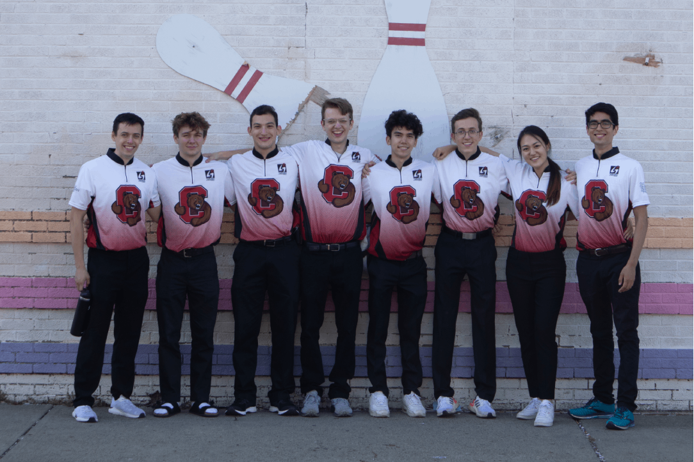

Competitive Team
The Bowling Club fields an official bowling team to travel to collegiate tournaments around the Northeast. The competitive team is student-run and is an outlet for our best and most avid bowlers to compete in a group environment.
More Info About Competitive Team
The competitive team is what the team makes of it. It is usually a small group of bowlers looking to be more serious about the sport of bowling. This includes more structured practices and travel to compete against other colleges at tournaments across the northeast. In the past, teams have been as small as 5, or as large as 13. (Tournaments are based on teams of 5, with one or two subs, so at times we have a varsity and JV team). We go to tournaments that we can afford and that people are available for. In previous years we’ve gone to 0 or 1 tournaments in a year, one year we went to 7. It all depends how much time and effort competitive team members want to put in. Usually bowlers interested in traveling competitively elect captains who decide rosters and lineups based on tryouts, practices, experience, and availability. It’s up to the competitive team to decide how they would like to organize leadership of the team, as we are student-run.